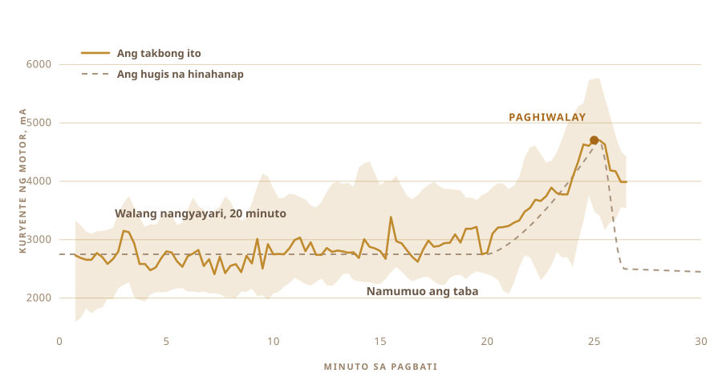

01
Kinain ko lang, hindi ko ginawa
Ang ghee ay mantekilyang pinakuluan hanggang maalis ang lahat ng tubig at maiwan na lang ang purong taba. Sa India at Nepal ito ang pang-araw-araw na panluto. Hindi ito nasisira kahit walang ref, at ang amoy nito ang buong dahilan kung bakit ito ginagawa.
Ang ghee na kilala ko ay galing sa mga nayon. Nakalagay sa mga garapong ginamit na muli, gawa ng mga taong ganoon na ganoon ang paraan sa napakatagal na panahon kaya wala na roong nagtuturing dito na parang teknik.
Hindi ito tulad ng lasa ng de-latang binibili sa tindahan.
At ni isang beses ay hindi pa ako nakagawa. Hindi ko alam kung gaano katagal iiwan ang gatas, o gaano kalamig dapat ang yogurt, o anong tunog ang dapat gawin ng kaldero kapag luto na.
02
Nagsisimula sa yogurt, hindi sa diretsong krema
Halos lahat ng ghee na gawa sa pabrika ay nagsisimula sa krema. Ang tradisyonal na paraan ay nagsisimula isa o dalawang araw bago pa niyan. Ang krema, na sa totoo lang ay pinakuluang buong gatas na pinalapot, ay ginagawang yogurt at iniiwang umasim sa magdamag.
Ang pag-asim na iyon ang pinakamahalaga. Kapag nilaktawan mo ito, tinunaw at sinalang mantekilya lang ang matitira sa iyo. Masarap naman, pero hindi ito ghee.

03
Dalawang araw sa counter
Mainit-init na gatas, isang kutsarang yogurt kahapon na hinahalo rito, at pagkatapos ay iiwan mo na lang ito sa buong magdamag at hahayaang magtrabaho ang bakterya. Dalawang araw kong iniwan ang akin sa labas.
Pagbuburo iyon, at ito ang hakbang na nilalaktawan ng gawa sa pabrika. Ang mga buhay na kultura, karamihan ay Lactobacillus, ay dinadaanan ang lactose at ginagawa itong lactic acid. Lumalapot ang gatas. Umaasim ito. Pagsapit ng umaga ay iba na ito.
Dito nanggagaling ang lahat ng mabuti. Nadudurog ang lactose, kaya hindi na mabigat sa tiyan. Nagiging mas madaling tanggapin ng katawan ang mga taba at protina. At may butyric acid, ang short chain fatty acid na siyang tunay na pinagkukunan ng lakas ng panloob na balat ng bituka mo, at mas marami rito sa ghee na ganito ang gawa kaysa sa ghee na binati lang mula sa sariwang krema.
Matagal nang ito mismo ang inirereseta ng Ayurveda.
Ang masasabi ko lang ay ang kultura ang gumagawa ng amoy. At ang amoy na iyon ang halos buong dahilan kung bakit sulit pang pagkahirapan ang lahat ng ito.

04
May pangalan ang paraan
Bilona. Yogurt sa kaldero, isang kahoy na pambati ang ibinababa doon, at pabalik-balik mong iginagalaw hanggang sumuko ang mantekilya at umangat.
Ako mismo ang gumawa ng pambati. Pinandikit ang mga nakita ko online, at wala ni isa sa kanila ang magsasabi kung anong pandikit ang ginamit. Kalahating oras na nakalubog iyon sa pagkain mo, kaya hindi ako manghuhula. Matigas na kahoy, mga turnilyong stainless, at ibinolt sa isang shaft ng panghalo na nasa drawer ko na.
Apat na braso at isang bakal na singsing na humahawak sa kanila nang pantay. Puro turnilyo ito, kaya puwede rin itong tanggalin muli.


Mga kalahating oras ito, at sa halos buong panahong iyon ay wala namang nangyayaring kahit ano. Kaya ito mismo ang klase ng gawaing napapanaginipan mong ipasa na lang sa iba.

05
Kaya nagtanong ako
Ang mga taong talagang marunong gumawa nito ay hindi sumusunod sa resipe, at wala ni isa sa kanila sa kusina ko. Kaya sa chat window na lang napunta ang mga tanong.
Gaano katagal pabuburuhin. Gaano kalamig itatago ang yogurt. Gaano kabilis puwedeng paikutin bago pumainit ang kaldero sa kiskisan at masira ang mantekilya. Bawat sagot ay nagbukas ng tatlo pa.
Pagkatapos ay tinanong ko ang talagang ibig kong itanong. Puwede bang gawin mo na lang?
Hindi na kung paano ako gagawa ng ghee ang tanong. Ang tanong ay kung puwede mo bang igawa ako.
06
Ang Halimaw
Isang cordless drill. Ang pambati, galing sa drawer at sa hardware. Isang plastik na lalagyan ng pagkain para sa electronics, isang sangkalan na siyang gulugod, at isang malaking dilaw na stop button, dahil dapat may ganoon ang kahit anong may motor.
Halos wala itong halaga, at mukha naman talagang ganoon. At iyon na mismo ang punto.

- MotorCordless drill, nakaipit sa clamp
- PambatiMatigas na kahoy at stainless, ginawa hindi binili
- UtakRaspberry Pi, nagtatala isang beses kada segundo
- PandamaKuryente ng motor para sa pambati, probe ng temperatura para sa pagluto
- HintoIsang malaking pindutan, nakakabit para patayin ang kuryente
07
Madali lang ang pagpaikot
Kahit sino ay kayang paikutin ang yogurt. Ang mahirap ay ang malaman kung kailan titigil.
Kapag masyadong maaga kang tumigil, makapal na bula lang ang makukuha mo. Kapag masyado kang nagtagal, ibinabalik mo na ang mantekilya sa buttermilk at mawawala ito. Gumagalaw ang tamang sandali depende sa taba, sa temperatura, at sa kung kumusta ang araw na iyon.
Walang nagtitimer dito. Pinapakinggan mo ito. Ang tunog ng pagsalpok ay nagbabago mula sa pantay na pag-alimpuyo tungo sa hindi pantay na pagsampal, at doon ka na kakamay.

08
Isang pandama, at iisa lang
Kaya isang pandama lang ang ibinigay ko rito. Binabantayan nito kung gaano kalakas ang hila ng motor.
Dalawampung minuto, walang nangyayari. Ang load ay nananatili sa paligid ng 2700 mA at pagala-gala lang. Pagkatapos ay nagsisimula nang mamuo ang taba at kailangan nang itulak ng drill ang isang bagay na mas makapal. Umaakyat ito sa 4700 at nananatili roon nang ilang sandali, at pagkatapos ay binibitawan na ng mantekilya ang likido at bumabagsak ang load.
Walang kamera, walang modelo, walang anumang matalino. Isang numerong umaakyat at pagkatapos ay bumabagsak.

09
Tumigil ito nang sarili nito
Umandar ito. Umalis ako at gumawa ng iba, at pagbalik ko ay pinatay na nito ang sarili nito.
Maputlang dilaw na mga butil na nakalubog sa malabong buttermilk. Walang nagsabi rito ng oras. Natuklasan nito iyon mula sa tanging bagay na kaya nitong madama.

10
Pagkatapos ay kamay na muli
Tipunin ang mga butil at pisilin hanggang maging isang bola. Banlawan sa malamig na tubig, paulit-ulit, hanggang hindi na malabo ang tubig na lumalabas.
Bawat patak ng buttermilk na maiiwan ay masusunog sa susunod na hakbang. Hindi ko ito ginawang automatiko, at ayaw ko rin.


11
Ang ikalawang pandama
Ang load ng motor ang nagsabi sa makina kung kailan titigil. Ibang problema ang pagluto. Hindi na sandali ang hinahanap mo. Sinusubukan mo nang panatilihin ang isang sandali.
Kaya ang kaldero ay inilalagay sa hotplate, may probe ng temperatura sa loob, at may AC regulator na nagsisindi at nagpapatay sa plate para manatili ang numero kung saan mo ito inilagay. Sa 250 F ko itinakda at nanatili ito roon nang mga isang oras.
Ang taong nagbabantay ng kaldero nang isang oras ay malilihis ng isip. Ang regulator ay hindi nababagot.

12
Isang oras ng pagtitig sa kulay
Mantekilya sa kaldero, at pagkatapos ay halos umaandar na ito nang sarili nito.
Natutunaw ito. Bumubula ito, puti at maingay. Naluluto ang tubig at nawawala ang ingay. Lumulubog ang latak ng gatas at nagiging kayumanggi, at ang amoy ay lumilipat mula sa mantekilya tungo sa parang tinustang bagay. Kapag tumahimik ang kaldero at naging malinaw ang likido, tapos na.
Pinanood ko pa rin ang halos lahat, dahil maganda namang panoorin. Pero wala sa ginawa ko ang nagbago sa kinalabasan.


13
Ghee
Malinaw, kulay ambar, at ang amoy ay katulad ng mga garapong pinagkainan ko noong bata ako. Iyon lang ang tanging pagsubok na mayroon ako, at pumasa ito.

Pumasok ito sa mga garapon na mainit at malinaw. Kinabukasan ay namuo na ito, maputla at mabutil.
Nilagyan ko ito ng etiketa. Ang salita roon ay ghee sa Nepali, at ang code na katabi nito ay magdadala sa iyo pabalik sa pahinang ito.

Unang batch na nagawa ko sa buong buhay ko. Hindi naman talaga ako ang gumawa.
14
Siyam na garapon sa ikalawang pagkakataon
Dalawang garapon lang ang naging bunga ng unang takbo, at iyon na ang lahat. Napuno nito ang buong barandilya.
Siyam na garapon. Dalawang matatangkad na may pinipihit na takip ang pinakamalapit sa kamera, anim na de-klip sa gitna, at isang maliit sa dulo mismo sa may poste.

Iba na ang etiketa ngayon. Ang unang dalawang garapon ay may rosas na papel na may nakaimprentang OUR STORY sa itaas. Ang mga ito ay malinaw na plastik, kaya natatanaw ang ghee mula sa likod ng mga letra, at ang code sa tabi nito ay magdadala pa rin sa iyo pabalik sa pahinang ito.


Namuo ito sa parehong maputlang dilaw ng unang grupo, bagay na hindi ako sigurado kung mangyayari.
15
Ang susunod kong gusto
Ngayon ay dalawang bagay ang alam ng makina. Kung kailan titigil sa pagbati, at kung anong temperatura ang hahawakan.
Susunod ay gusto kong bigyan ito ng mata at tainga. Isang kamera, para makita nito ang paghupa ng bula at ang pagkakayumanggi ng latak, at para ito na mismo ang pumili ng init kaysa hawakan lang ang numerong ibinigay ko rito. At isang mikropono, dahil malaking bahagi ng nagsasabi sa iyo na luto na ang ghee ay ang pagtahimik ng kaldero.
Malamang na kaya pa ng drill ang pangalawang shift. Kapag nasa kaldero na ang mantekilya ay kailangan itong haluin, at may motor na nakaupo lang doon na walang ginagawa.
Pagkatapos ang loop. Baguhin ang haba ng pagbuburo, baguhin ang bilis, tikman ang lumabas, itago ang gumana, umulit. Tatlumpung takbo at mapupunta ito sa lugar na hindi ko sana naisipang tingnan.
Hindi ko naman talaga alam kung saan dapat tumingin.
Kung saan ito gawa, kung saan nangyayari ang pagsukat, at kung ano talaga ang binabantayan ng makina.